임상심리사-2급 (2019-03-03 기출문제)
1과목: 심리학개론
1. 망각에 대한 설명으로 틀린 것은?
- 망각은 단기기억과 장기기억에서 모두 일어날 수 있다.
- 시간이 경과함에 따라 이전의 정보를 더 많이 잃어버리는 현상을 쇠퇴라고 한다.
- 망각은 적절한 인출 단서가 없거나 유사한 기억 내용이 간섭을 해서 나타날 수있다.
- 장기기억에서 망각이 일어나는 주요 이유는 대치와 쇠퇴 현상 때문이다.
(정답률: 71%)

2. Fastinger와 Carlsmith(1959)의 연구에 의하면 피험자들이 적은 돈, 혹은 많은 돈을 받고 어떤 지루한 일을 재미있다고 다른 사람에게 말하였을 때, 후에 그 일에 대한 태도의 결과로 옳은 것은?
- 적은 돈을 받은 사람은 실제로 그 일이 재미있다고 생각한다.
- 많은 돈을 받은 사람은 실제로 그 일이 재미있다고 생각한다.
- 적은 돈을 받은 사람이나 많은 돈을 받은 사람 모두 실제로 그 일이 재미있다고 생각한다.
- 적은 돈을 받은 사람이나 많은 돈을 받은 사람 모두 그 일이 지루하다고 생각한다.
(정답률: 71%)
3. 성격이론에 대한 설명으로 틀린 것은?
- 유형론이 비연속적 범주에 의해서 성격특징들을 기술하는데 비해 특성론은 연속적인 속성으로 성격특징들을 파악하고 기술한다.
- Adler이론에서는 열등감, 보상, 우월성 추구가 핵심적 개념이다.
- 행동주의적 성격이론에 따르면 성격은 개인이 타고났거나 상당히 지속적인 속성이며 학습에 의해 형성된 것이다.
- Rogers가 묘사한 “완전히 기능하는 인간”은 경험에 대한 개방, 자신에 대한 신뢰, 내적 평가, 성장의지를 가진 사람이다.
(정답률: 59%)
4. 표집방법 중 확률표집방법에 해당하지 않는 것은?
- 단순 무선표집(simpling random sampling)
- 체계적 표집(systematic sampling)
- 군집표집(cluster sampling)
- 대리적 표집(incidental sampling)
(정답률: 70%)
5. Freud에 따르면 거세불안을 극복하는 과정에서 형성되는 성격의 요소는?
- 원초아
- 자아
- 초자아
- 무의식
(정답률: 71%)
6. 처벌의 효과적인 사용방법에 대한 설명으로 틀린 것은?
- 처벌은 반응 이후 시간을 두고 주는 것이 효과적이다.
- 반응이 나올 때마다 매번 처벌을 주는 것이 효과적이다.
- 처음부터 아주 강한 강도의 처벌을 주는 것이 효과적이다.
- 처벌행동에 대해 대안적 행동이 있을 때 효과적이다.
(정답률: 83%)
7. Rogers의 성격이론에서 심리적 적응에 가장 중요한 역할을 한다고 가정하는 것은?
- 자아강도(ego strength)
- 자기(self)
- 자아이상(ego ideal)
- 인식(awareness)
(정답률: 84%)
8. 성격심리학의 주요한 모델인 성격 5요인에 대한 설명으로 옳은 것은?
- 5요인에 대한 개인차에서 유전적 요인은 찾아볼 수 없다.
- 성실성 점수가 높은 사람의 경우 행동을 계획하고 통제하는 것을 돕는 전두엽의 면적이 더 큰 경향이 있다.
- 뇌의 연결성은 5요인의 특질에 영향을 미치지 않는다.
- 정서적 불안정성인 신경증은 일생동안 계속해서 증가하고 성실성, 우호성, 개방성과 외향성은 감소한다.
(정답률: 78%)
9. 특정 검사에 대한 반복노출로 인해 발생하는 연습효과를 줄이기 위해 이 검사와 비슷한 것을 재는 다른 검사를 이용하여 측정하는 검사의 신뢰도는?
- 반분신뢰도
- 동형검사 신뢰도
- 검사-재검사 신뢰도
- 채점자간 신뢰도
(정답률: 84%)
10. 다음 설명이 나타내는 것은?
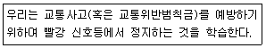
- 행동조성
- 회피학습
- 도피학습
- 유관성 학습
(정답률: 45%)
11. 다음 실험에서 살펴보고자 한 것은?
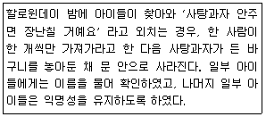
- 몰개성화
- 복종
- 집단사고
- 사회촉진
(정답률: 68%)
12. 다음 ( )에 알맞은 것은?
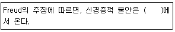
- 환경에 있는 실재적 위험
- 환경내의 어느 일부를 과장해서 해석함
- 원초아의 충동과 자아의 억제 사이의 무의식적 갈등
- 그 사회의 기준에 맞추어 생활하지 못함
(정답률: 94%)
13. 너무 더우면 땀을 흘리고, 너무 추우면 몸을 떠는 것과 같이 항상성(homeostasis)을 유지하는 것과 관련이 있는 뇌의 부위는?
- 소뇌
- 시상하부
- 뇌하수체
- 변연계
(정답률: 59%)
14. 다음이 설명하는 개념은?
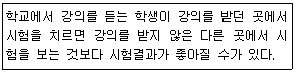
- 처리수준모형
- 부호화특정원리
- 재인기억
- 우연학습
(정답률: 59%)
15. Piaget의 인지발달단계 중 대상영속성(object permanence)의 발달이 최초로 이루어지는 단계는?
- 감각운동기
- 전조작기
- 구체적 조작기
- 형식적 조작기
(정답률: 74%)
16. 강화계획에 관한 설명으로 틀린 것은?
- 고정비율 계획에서는 매 n번의 반응마다 강화인이 주어진다.
- 변동비율 계획에서는 평균적으로 n번의 반응마다 강화인이 주어진다.
- 고정간격 계획에서는 정해진 시간이 지난 후의 첫 번째 반응에 강화인이 주어지고, 강화인이 주어진 시점에서 다시 일정한 시간이 지난 후의 첫 번째 반응에 강화인이 주어진다.
- 변동비율과 변동간격 계획에서는 강화를 받은 후 일시적으로 반응이 중단되는 특성이 있다.
(정답률: 70%)
17. 마리화나가 기억에 미치는 영향을 알아보기 위한 연구에서 선행조건인 마리화나의 양은 어떤 변수에 해당하는가?
- 독립변수
- 종속변수
- 가외변수
- 외생변수
(정답률: 85%)
18. 상관계수에 관한 설명으로 옳은 것은?
- 두 변수간의 연합정도 보다는 변별정도를 나타낸다.
- 상관계수의 범위는 0에서 +1까지이다.
- 두 변수 사이의 관계의 강도는 상관계수(γ)의 절대치에 의해 규정된다.
- 한 변수가 다른 변수에 영향을 미치는 인과관계를 추론할 수 있다.
(정답률: 55%)
19. 의미 있는 "0"의 값을 갖는 측정의 수준은?
- 명목측정
- 비율측정
- 등간측정
- 서열측정
(정답률: 68%)
20. 내분비체계에서 개인의 기분, 에너지 수준 및 스트레스를 해결하는 능력에서 중요한 역할을 하는 것은?
- 시상하부
- 뇌하수체
- 송과선
- 부신
(정답률: 72%)
2과목: 이상심리학
21. DSM-5 에서 다음에 해당하는 지적장애(Intellectual Disability) 수준은?
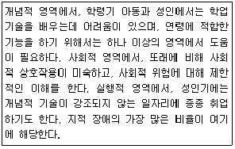
- 경도(Mild)
- 중등도(Moderate)
- 고도(Severe)
- 최고도(Profound)
(정답률: 78%)
22. 친밀한 관계에서의 문제, 인지 및 지각의 왜곡, 행동의 괴이성 등을 주요특징으로 보이는 성격장애는?
- 조현성 성격장애
- 조현형 성격장애
- 편집성 성격장애
- 회피성 성격장애
(정답률: 60%)
23. 공황을 경험하거나 옴짝달싹 못하게 되었을 때, 도망가기 어렵거나 도움이 가능하지 않은 공공장소나 상황에 있는 것을 두려워하는 불안장애는?
- 왜소공포증
- 사회공포증
- 광장공포증
- 폐쇄공포증
(정답률: 73%)
24. 의사소통장애(communication disorder)에 속하지 않는 것은?
- 언어장애(language disorder)
- 말소리장애(speech sound disorder)
- 아동기 발병 유창성장애(childhood-onset fluency disorder)
- 탈억제성 사회적 유대감 장애(disinhibited social engagement disorder)
(정답률: 83%)
25. 공황장애에 대한 설명과 가장 거리가 먼 것은?
- 일부 신체감각에 대한 재앙적 사고는 공황장애에서 나타나는 대표적인 인지적 왜곡이다.
- 항우울제보다는 항불안제가 공황장애 환자들의 치료에 우선적으로 쓰인다.
- 전체 인구의 1/4 이상은 살면서 특정 시점에 한두 번의 공황발작을 경험하는 것으로 알려져 있다.
- 반복적이고 예기치 못한 공황발작이 특징적이다.
(정답률: 55%)
26. Young에 의해 개발된 것으로, 전통적인 인지치료를 통해 긍정적인 치료효과를 보지 못했던 만성적인 성격문제를 지닌 환자와 내담자를 위한 치료법은?
- 심리도식 치료(schema therapy)
- 변증법적 행동치료(dialectical behavior therapy)
- 마음챙김에 기초한 인지치료(mindfulness-based cognitive therapy)
- 통찰 중심치료(insight focused therapy)
(정답률: 51%)
27. 다음 사례와 같은 성격장애는?
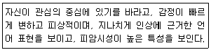
- 편집성 성격장애
- 연극성 성격장애
- 자기애성 성격장애
- 강박성 성격장애
(정답률: 72%)
28. 뇌에서 발견되는 베타 아밀로이드라는 단백질의 존재와 가장 관련이 있는 장애는?
- 파킨슨병
- 조현병
- 알츠하이머병
- 주요우울장애
(정답률: 70%)
29. 다음에서 설명하고 있는 조현병 유발요인에 해당하는 것은?
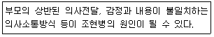
- 조현병을 유발하기 쉬운 어머니의 양육태도(schizophrenogenic mother)
- 이중구속이론(double-bind theory)
- 표현된 정서(expressed emotion)
- 분열적 부부관계(marital schism)
(정답률: 65%)
30. Beck의 우울 이론 중 부정적 사고의 세 가지 형태에 해당하지 않는 것은?
- 과거에 대한 부정적 사고
- 자신에 대한 부정적 사고
- 미래에 대한 부정적 사고
- 주변환경(경험)에 대한 부정적 사고
(정답률: 73%)
31. 공포증의 형성 및 유지에 대한 2요인 이론은 어떤 요인들이 결합된 이론인가?
- 학습 요인과 정신분석 요인
- 학습 요인과 인지 요인
- 회피 조건형성과 준비성 요인
- 고전적 조건형성과 조작적 조건형성
(정답률: 70%)
32. 알콜 중독과 비타민 B(티아민) 결핍이 결합되어 만성 알콜 중독자에게 발생하는 장애로, 최근 및 과거 기억을 상실하고 새로운 정보를 학습하지 못하는 인지손상과 관련이 있는 것은?
- 뇌전증
- 혈관성 신경인지장애
- 헌팅턴병
- 코르사코프 증후군
(정답률: 78%)
33. 정신분석학적 관점에서 볼 때 해리장애를 야기하는 주된 방어기제는?
- 억압
- 반동형성
- 치환
- 주지화
(정답률: 75%)
34. 조현병의 진단기준에 해당하는 증상이 아닌 것은?
- 망상
- 환각
- 고양된 기분
- 와해된 언어
(정답률: 79%)
35. 주의력결핍 및 과잉행동 장애(ADHD)의 치료에 사용되는 약물은?
- Ritalin
- Thorazine
- Insulin
- Methadone
(정답률: 63%)
36. 특정공포증의 하위유형 중 공포상황에서 초반에 짧게 심박수와 혈압이 증가된 후 갑자기 심박수와 혈압의 저하가 뒤따르고 그 결과 실신하거나 실신할 것 같은 반응을 경험하는 것은?
- 동물형
- 상황형
- 자연환경형
- 혈액-주사-손상형
(정답률: 58%)
37. 기분관련장애와 관련된 유전가능성에 대한 설명으로 옳은 것은?
- 유전가능성은 양극성 장애보다 단극성 장애에서 더 높다.
- 유전가능성은 단극성 장애보다 양극성 장애에서 더 높다.
- 유전가능성은 단극성 장애와 양극성 장애에서 유사하다.
- 단극성 장애와 양극성 장애는 유전가능성과 관련이 없다.
(정답률: 64%)
38. 외상후 스트레스 장애의 주된 증상과 가장 거리가 먼 것은?
- 침습증상
- 지속적인 회피
- 과도한 수면
- 인지와 감정의 부정적 변화
(정답률: 80%)
39. DSM-5에서 주요우울장애의 주 증상에 포함되지 않는 것은?
- 정신운동성 초조나 지체
- 불면이나 과다수면
- 죽음에 대한 반복적인 생각
- 주기적인 활력의 증가와 감소
(정답률: 73%)
40. DSM-5에서 성별 불쾌감에 대한 설명으로 틀린 것은?
- 성인의 경우 반대 성을 지닌 사람으로 행동하며 사회에서 그렇게 받아들여지기를 강렬하게 소망한다.
- 태어나면서 정해진 출생 성별과 경험하고 표현하는 성별 사이에 뚜렷한 불일치를 보인다.
- 아동에서부터 성인에 이르기까지 다양한 연령대에서 나타날 수 있다.
- 동성애자들이 주로 보이는 장애이다.
(정답률: 79%)
3과목: 심리검사
41. 지능의 개념에 관한 연구자와 주장의 연결이 틀린 것은?
- Wechsler - 지능은 성격과 분리될 수 없다.
- Horn - 지능은 독립적인 7개 요인으로 이루어져 있다.
- Cattell - 지능은 유동적 지능과 결정화된 지능으로 구분할 수 있다.
- Spearman - 지적 능력에는 g요인과 s요인이 존재한다.
(정답률: 65%)
42. MMPI-2의 형태분석에서 T 점수가 65 이상으로 상승된 임상척도들을 묶어서 해석하는 것은?
- 코드유형(code type)
- 결정문항(critical items)
- 내용척도(content scales)
- 보완척도(supplementary scales)
(정답률: 70%)
43. 정신연령(mental age) 개념상 실제 연령이 10세인 아동이 IQ검사에서 평균적으로 12세 아동들이 획득할 수 있는 점수를 보였다. 이 아동의 IQ 점수는 어느 정도라고 할 수 있는가?
- 84
- 100
- 120
- 140
(정답률: 72%)
44. 다음은 MMPI의 2개척도 상승 형태분석 결과이다. 어느 척도 상승에 해당하는 것인가?
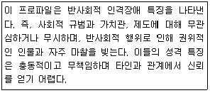
- 1-2
- 2-1
- 3-5
- 4-9
(정답률: 77%)
45. Rorschach 검사의 각 카드별 평범반응이 잘못 짝지어진 것은?
- 카드 I - 가면
- 카드IV - 거인
- 카드V - 나비
- 카드VI - 동물의 가죽
(정답률: 55%)
46. 초등학교 아동에게 사용하기 적합하지 않은 검사는?
- SAT
- KPRC
- CBCL
- K-Vineland-II
(정답률: 56%)
47. MMPI-2가 대표적인 자기보고식 심리검사로 사용되는 이유가 아닌 것은?
- 객관적으로 표준화된 규준을 갖추고 있다.
- 많은 연구결과가 축적되어 있다.
- 코드 유형 등을 사용해 체계적으로 사용할 수 있다.
- MMPI척도가 DSM체계와 일치하여 장애진단이 용이하다.
(정답률: 71%)
48. Rorschach 구조변인 중 형태질에 대한 채점이 아닌 것은?
- v
- -
- o
- u
(정답률: 55%)
49. 뇌손상 환자의 병전지능 수준을 추정하기 위한 자료와 가장 거리가 먼 것은?
- 교육수준, 연령과 같은 인구학적 자료
- 이전의 직업기능 수준 및 학업 성취도
- 이전의 암기력 수준, 혹은 웩슬러 지능검사에서 기억능력을 평가하는 소검사 점수
- 웩슬러 지능검사에서 상황적 요인에 의해 잘 변화하지 않는 소검사 점수
(정답률: 49%)
50. 신경심리 평가시 고려해야 할 사항과 가장 거리가 먼 것은?
- 손상후 경과시간
- 성별
- 교육수준
- 연령
(정답률: 68%)
51. 심리평가를 시행할 때 고려할 사항과 가장 거리가 먼 것은?
- 성격이 복잡한 구조로 이루어져 있음을 고려한다.
- 각각의 심리검사는 성격의 상이한 수준을 측정할 수 있음을 고려한다.
- 측정의 방법과 관련된 요인이 그 결과에 영향을 미칠 수 있음을 고려한다.
- 심리적 구성개념과 대응되는 구체적인 행동 모두를 관찰한 이후에야 결론에 이를 수 있음을 고려한다.
(정답률: 63%)
52. 일반적으로 지능검사는 같은 연령 범주 규준집단의 원 점수를 평균 100, 표준편차 15인 표준점수로 바꾸어서 규준을 작성 한다. IQ 85와 115 사이에는 전체 규준 집단의 사람들 중 약 몇 %가 포함된다고 가정할 수 있는가?
- 16%
- 34%
- 68%
- 96%
(정답률: 69%)
53. 선로 잇기 검사(Trail Making Test)는 대표적으로 어떤 기능 또는 능력을 측정하기 위해 고안된 검사인가?
- 주의력
- 기억력
- 언어능력
- 시공간 처리능력
(정답률: 64%)
54. 주의력결핍과잉행동장애(ADHD)로 진단된 아동의 경우 Wechsler 지능검사상 수행이 저하되기 쉬운 소검사는?
- 공통성
- 숫자
- 토막짜기
- 어휘
(정답률: 61%)
55. 다음 설명에 해당하는 타당도는?
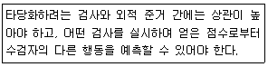
- 준거관련 타당도
- 내용관련 타당도
- 구인타당도
- 수렴 및 변별 타당도
(정답률: 78%)
56. MMPI에서 6번과 8번 척도가 함께 상승했을 때의 가능한 해석이 아닌 것은?
- 편집증적 경향과 사고장애가 주된 임상 특징이다.
- 주요 방어기제는 투사, 외향화, 왜곡, 현실 부정이다.
- 대인관계 특징은 친밀한 관계 형성의 어려움, 불신감, 적대감이다.
- 남들로부터 관심과 애정을 끌고 동정을 받으려는 강한 욕구를 지니고 있다.
(정답률: 66%)
57. Wechsler 지능검사를 실시할 때 주의할 점과 가장 거리가 먼 것은?
- 가급적 표준화된 과정과 동일한 방식대로 실시되어야 한다.
- 검사의 이론적 배경, 적용한계, 채점방식 등에 관해 충분한 이해가 선행되어야 한다.
- 검사도구는 그 검사를 실시하기 전까지 피검자의 눈에 띄지 않는 곳에 두어야 한다.
- 지적인 요인을 평가하는 검사이므로 다른 어떤 검사보다 피검자와의 라포 형성은 최소화되어야 한다.
(정답률: 79%)
58. MMPI-2에서 문항의 내용과 무관하게 응답하는 경향을 측정하는 척도는?
- F
- F(p)
- FBS
- TRIN
(정답률: 65%)
59. 심리검사 사용 윤리와 가장 거리가 먼 것은?
- 자격을 갖춘 사람만이 심리검사를 사용해야 한다.
- 자격을 갖춘 사람만이 심리검사를 구매할 수 있다.
- 쉽게 이해할 수 있고 검사 목적에 맞는 용어로 검사 결과를 제시하는 것이 좋다.
- 검사 결과는 어떠한 경우라도 사생활 보장과 비밀유지를 위해 수검자 본인에게만 전달되어야 한다.
(정답률: 78%)
60. 주의력 손상을 측정하기 위한 검사가 아닌 것은?
- Category Test
- Digit-Span Test
- Letter Cancellation Test
- Visual Search and Attention Test
(정답률: 41%)
4과목: 임상심리학
61. 심리평가 도구 중 최초 개발된 이후에 검사의 재료가 변경된 적이 없는 것은?
- Wechsler 지능검사
- MMPI 다면적 인성검사
- Bender-Gestalt 검사
- Rorschach 검사
(정답률: 75%)
62. 심리치료에 관한 연구결과로 옳은 것은?
- 모든 문제들은 똑같이 치료가 어렵다.
- 치료자의 연령과 치료성과와의 관련성은 없다.
- 사회경제적 지위는 좋은 치료효과를 예언한다.
- 치료자의 치료경험과 치료성과 간의 관계는 일관적이다.
(정답률: 40%)
63. 치료효과에 긍정적인 영향을 미치는 유능한 치료자의 특성과 가장 거리가 먼 것은?
- 의사소통 능력
- 이론적 모델
- 치료적 관계 형성 능력
- 자기관찰과 관리기술
(정답률: 72%)
64. Rogers의 인간중심 이론에서 치료자가 지녀야 할 주요 특성으로 틀린 것은?
- 합리성
- 진실성
- 정확한 공감
- 무조건적인 존중
(정답률: 73%)
65. 내담자의 경험에 초점을 두고 심리치료적 상호작용에서 감정이입, 따뜻함, 무조건적인 긍정적 존중을 강조한 접근은?
- 정신분석적 접근
- 행동주의 접근
- 생물학적 접근
- 인본주의 접근
(정답률: 83%)
66. 다음과 같은 상황에서 임상심리사에게 가장 필요한 것은?
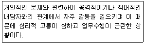
- 임상실습훈련에 참여
- 지도감독에 참여
- 소양교육에 참여
- 개인심리치료에 참여
(정답률: 73%)
67. 심리평가의 해석 과정에 대한 설명으로 틀린 것은?
- T 점수의 평균은 50점, 표준편차는 10점이 된다.
- 개인내간 차이는 각 하위척도 점수를 표준점수로 환산하여 오차를 없앤 뒤 절대값을 산출한다.
- 외적 준거로 채택한 검사에서 받을 수 있는 점수를 좀 더 정확하게 추정하려면 회귀방정식을 이용해야 한다.
- 심리검사의 점수는 절대성이 있는 것이 아니고 상대적으로 비교한 측정치로 상대성을 포함한다.
(정답률: 43%)
68. 다음 중 접수면접에서 반드시 확인되어야 할 사항과 가장 거리가 먼 것은?
- 인적사항
- 주 호소문제
- 내원하게 된 직접적 계기
- 문제의 원인으로 추정되는 어린 시절의 경험
(정답률: 83%)
69. 다음과 관련된 치료적 접근은?
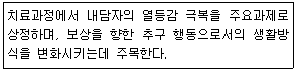
- Erikson의 심리사회적 발달이론
- Freud의 정신분석학
- Adler의 개인심리학
- 대상관계이론
(정답률: 71%)
70. 최초의 심리진료소를 설립함으로써 임상심리학의 초기발전에 직접적으로 중요한 공헌을 한 인물은?
- Kant
- Witmer
- Mowrer
- Miller
(정답률: 69%)
71. 다음은 자문의 모델 중 무엇에 관한 설명인가?
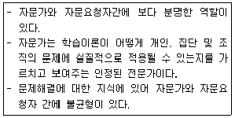
- 정신건강 모델
- 행동주의 모델
- 조직 모델
- 과정 모델
(정답률: 46%)
72. 방어기제에 대한 개념과 설명이 바르게 짝지어진 것은?
- 투사(projection): 주어진 상황에서 결과에 대해 어쩔 수 없었다고 생각하며 행동 한다.
- 대치(displacement): 추동대상을 위협적이지 않거나 이용 가능한 대상으로 바꾼다.
- 반동형성(reaction formation): 이전의 만족방식이나 이전 단계의 만족대상으로 후퇴한다.
- 퇴행(regression): 무의식적 추동과는 정반대로 표현한다.
(정답률: 73%)
73. 직접행동관찰에 관한 설명으로 가장 적합한 것은?
- 평정하고자 하는 속성을 명확하게 정의해야 한다.
- 후광효과의 영향은 고려되지 않는다.
- 내현적이거나 추론된 성격 측면을 평가하는데 적합하다.
- 각각의 항목에 대해 극단적인 점수에 평정하는 경향이 있다.
(정답률: 64%)
74. 정상적 지능의 성인이 나머지 가족원을 살해한 사건에서 법정 임상심리학자가 가장 우선적으로 고려해야할 사항은?
- 가족의 재산정도
- 피해자와 가해자의 평소 친분관계
- 목격자 증언의 신빙성
- 범행 당시 가해자의 정신상태
(정답률: 71%)
75. 다음 사례에서 사용한 치료적 접근은?
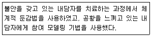
- 행동적 접근
- 정신분석적 접근
- 실존주의적 접근
- 현상학적 접근
(정답률: 74%)
76. 상담자가 자신의 내담자와 치료를 진행하는 기간에 내담자 가족에게 식사초대를 받아 식사를 했다면 어떤 윤리원칙을 위반할 가능성이 높은가?
- 유능성
- 이중관계
- 전문적 책임
- 타인의 존엄성에 대한 존중
(정답률: 83%)
77. 심리평가를 시행하는 동안 임상심리사가 취해야 할 태도와 가장 거리가 먼 것은?
- 행동관찰에서는 비일상적 행동이나 그 환자만의 특징적인 행동을 주로 기술한다.
- 관찰된 행동을 기술할 때 구체적인 용어로 설명하는 것이 바람직하다.
- 평가상황에서의 일상적인 행동을 평가보고서에 기록하는 것이 좋다.
- 심리검사 결과뿐만 아니라 외모나 면접자에 대한 태도, 의사소통방식 등도 기록하는 것이 좋다.
(정답률: 66%)
78. 임상적 평가의 목적과 가장 거리가 먼 것은?
- 치료의 효과에 대한 예측(예후)
- 미래 수행에 대한 예측
- 위험성 예측
- 심리 본질의 발견
(정답률: 69%)
79. 아동의 바람직하지 않은 행동을 감소시키기 위해 사용할 수 있는 적합한 기법은?
- 행동연쇄(Chaining)
- 토큰경제(Token economy)
- 과잉교정(Overcorrection)
- 주장훈련(Assertive training)
(정답률: 41%)
80. 행동평가에 관한 설명으로 틀린 것은?
- 목표행동을 정확히 기술한다.
- 행동의 선행조건과 결과를 확인한다.
- 법칙정립적(nomothetic) 접근에 기초한다.
- 특정상황에 대한 개인의 행동에 초점을 맞춘다.
(정답률: 68%)
5과목: 심리상담
81. 진로지도 및 진로상담의 일반적인 목표와 가장 거리가 먼 것은?
- 내담자 자신에 관한 보다 정확한 이해를 높인다.
- 합리적인 의사결정능력을 높인다.
- 일과 직업에 대한 올바른 가치관을 형성하는데 도움을 준다.
- 이미 선택한 진로에 대해 후회하지 않도록 유도한다.
(정답률: 79%)
82. 사회 공포증 치료에서 지금까지 피해왔던 상황을 더 이상 회피하지 않고 직면하게 하는 행동수정 기법은?
- 노출훈련
- 역할연기
- 자동적 사고의 인지재구성 훈련
- 역기능적 신념에 대한 인지재구성 훈련
(정답률: 73%)
83. 주요 상담이론과 대표적 학자들이 바르게 짝지어지지 않은 것은?
- 정신역동이론 - Freud, Jung, Kemberg
- 인본(실존)주의이론 - Rogers, Frankl, Yalom
- 행동주의 이론 - Watson, Skinner, Wolpe
- 인지치료이론 - Ellis, Beck, Peris
(정답률: 47%)
84. 성폭력에 관한 설명으로 옳은 것은?
- 성폭력은 성적 자기결정권의 침해이다.
- 끝까지 저항하면 강간은 불가능하다.
- 성폭력의 피해자는 여성뿐이다.
- 강간은 낯선 사람에 의해서만 발생한다.
(정답률: 80%)
85. 상담의 일반적인 윤리적 원칙에 해당하지 않는 것은?
- 자율성(autonomy)
- 무해성(nonmaleficence)
- 선행(beneficience)
- 상호성(mutuality)
(정답률: 45%)
86. 문화적으로 다양한 집단이 참여하는 집단상담에서의 기본 전제로 적합하지 않은 것은?
- 상담자보다 내담자에 대해서만 기본가정(문화, 인종, 성별 등)을 고려해야 한다.
- 모든 인간의 만남은 그 자체가 다문화적이다.
- 사람들의 문화적 배경을 고려해야 한다.
- 지도자는 다문화적 관점을 갖고 있어야 한다.
(정답률: 77%)
87. Satir의 의사소통 모형에서 스트레스를 다룰 때 자신의 스트레스를 무시하고 다른 사람에게 힘을 넘겨주며 모두에게 동의하는 말을 하는 의사소통 유형은?
- 초이성형
- 일치형
- 산만형
- 회유형
(정답률: 63%)
88. 다음 대화에서 상담자의 반응은?
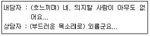
- 해석
- 재진술
- 요약
- 반영
(정답률: 59%)
89. 병적 도박에 관한 설명으로 틀린 것은?
- 대개 돈의 액수가 커질수록 더 흥분감을 느끼며, 흥분감을 느끼기 위해 액수를 더 늘린다.
- 도박행동을 그만두거나 줄이려고 시도할 때 안절부절 못하거나 신경이 과민해진다.
- 병적 도박은 DSM-5에서 반사회성 성격장애로 분류된다.
- 병적 도박은 전형적으로 남자는 초기 청소년기에, 여자는 인생의 후기에 시작되는 경우가 많다.
(정답률: 73%)
90. 다음에 해당하는 인지적 왜곡은?
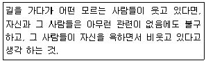
- 극대화
- 예언자의 오류
- 개인화
- 이분법적 사고
(정답률: 60%)
91. 청소년 상담시 대인관계 문제해결을 위한 상담전략에 관한 설명으로 틀린 것은?
- 정서적 개입 : 문제의 신체적 요소에 초점을 맞춘 신체 인식활동도 포함한다.
- 인지적 개입 : 내담자가 자신이 처한 상황이나 사건, 사람, 감정 등에 대해 지금과 다르게 생각하도록 돕는다.
- 행동적 개입 : 내담자에게 비생산적인 현재의 행동을 통제하게 하거나 제거하게 함으로써 새로운 행동이나 기술을 개발하도록 돕는다.
- 상호작용적 개입 : 습관, 일상생활 방식이나 다른 사람과의 상호작용 패턴을 수정하도록 한다.
(정답률: 28%)
92. 개인의 일상적 경험구조, 특히 소속된 분야에서 특별하다고 간주되던 사람들의 일상적 경험구조를 상세하게 연구하고자 하는 목적에서 생겨난 심리상담의 핵심적인 전제조건에 해당하는 것은?
- 매순간 새로운 자아가 출현하고 새로운 경험을 할 때마다 우리는 새로운 위치에 있게 된다.
- 어린 시절의 창조적 적응은 습관적으로 알아차림을 방해한다.
- 내담자로 하여금 문제를 해결하는 것뿐만 아니라 그 문제를 유지시키는 보다 근본적인 기술을 변화시키도록 돕는 것이 중요하다.
- 개인은 마음, 몸, 영혼으로 이루어진 체계이며, 삶과 마음은 체계적 과정이다.
(정답률: 42%)
93. 상담초기에 상담관계 형성에 필요한 기법과 가장 거리가 먼 것은?
- 경청하기
- 상담에 대한 동기부여하기
- 핵심 문제 해석하기
- 무조건적인 긍정적 존중하기
(정답률: 70%)
94. Adler 개인심리학의 기본 가정에 해당하지 않는 것은?
- 개인은 무의식과 의식, 감정과 사고, 행동이 각각 분리되어 있는 것으로 본다.
- 인간은 미래 목표를 향해 나아가는 창조적인 존재라고 본다.
- 현실에 대한 주관적 인식을 강조하며 현상학적 접근을 취한다.
- 인간은 기본적으로 공동체 의식, 즉 사회적 관심을 지닌 존재라고 본다.
(정답률: 60%)
95. 중독에 대한 동기강화상담의 기본 기법 4가지(OARS)에 포함되지 않는 것은?
- 인정
- 공감
- 반영
- 요약
(정답률: 43%)
96. 직업발달을 직업 자아정체감을 형성해 나가는 계속적 과정으로 보는 이론은?
- Ginzberg의 발달이론
- Super의 발달이론
- Tiedeman과 O'Hara의 발달이론
- Tuckman의 발달이론
(정답률: 43%)
97. 면접기법에 대한 설명으로 틀린 것은?
- 구체적인 내용의 해석은 상담관계가 형성되는 중반까지는 보류하는 것이 일반적이다.
- 감정의 명료화에서 내담자가 원래 제시한 것보다 더 많은 의미를 추가하여 반응하는 것은 삼갈 필요가 있다.
- 내담자의 성격을 파악하지 못했거나 해석의 실증적 근거가 없을 때는 해석을 하지 말아야 한다.
- 상담자의 반영, 명료화, 직면, 해석은 별개가 아니라 반응 내용의 정도와 깊이에 차이가 있을 뿐이다.
(정답률: 39%)
98. Lazarus의 중다양식 상담에 관한 설명으로 틀린 것은?
- 성격의 일곱가지 양식은 행동, 감정, 감각, 심상, 인지, 대인관계, 약물/생물학 등이다.
- 사람은 개인이 타인들과의 긍정적이거나 부정적인 상호작용의 결과들을 관찰함으로써 무엇을 할 것인지를 배운다고 본다.
- 사람들은 고통, 좌절, 스트레스를 비롯하여 감각자극이나 내적 자극에 대한 반응을 나타내는 식별역이 유사하다.
- 행동주의 학습이론과 사회학습이론, 인지주의의 영향을 많이 받았으며, 그 외 다른 치료기법들도 절충적으로 사용한다.
(정답률: 52%)
99. 3단계 상담모델(탐색단계, 통찰단계, 실행단계)에서 탐색단계의 특징에 해당하는 것은?
- 내담자가 그들의 감정을 표현하고 복잡한 문제를 통한 그들의 생각을 표현하는 기회를 제공한다.
- 내담자들이 새로운 밝은 면을 볼 수 있도록 돕는다.
- 내담자에게 어떤 사건을 만드는데 원형을 제공하고 그들이 더 좋은 선택을 할 수 있도록 돕는다.
- 내담자가 왜 그들이 행동하고, 생각하고, 느끼는가에 관하여 이해할 수 있게 해준다.
(정답률: 65%)
100. 청소년을 대상으로 한 자살 위험 평가에 대한 설명으로 틀린 것은?
- 개별적으로 임상 면담을 실시한다.
- 자살 준비에 대한 구체적인 질문은 자살가능성을 높일 수 있으므로 피한다.
- 자살의도를 유보하고 있는 기간이라면 청소년의 강점과 자원을 탐색한다.
- 자살에 대해 생각할 수 있으나 행동으로 실천하지 않겠다는 구체적인 약속을 한다.
(정답률: 75%)